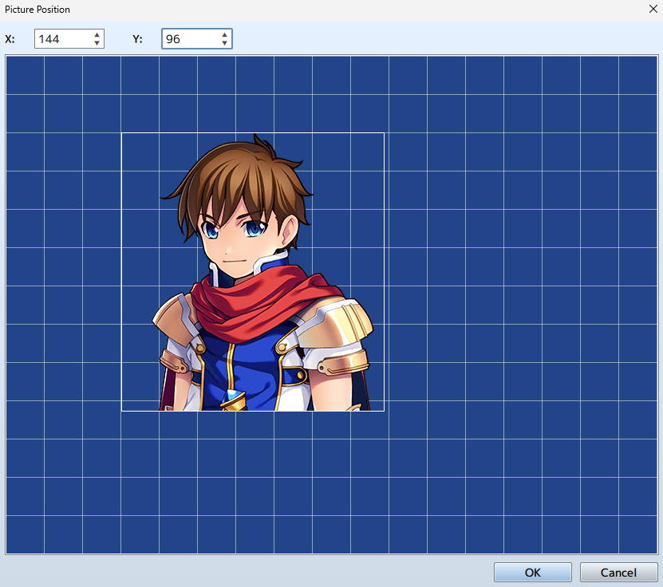

RPG MAKER MZ HELP
Event Commands

Picture
Show Picture
Function
Displays a picture (static image) on the screen.
Settings
-
Picture: Number
Specify a control number (from 1 to 100) to link to the image.
-
Picture: Image
Specify the image to be displayed.
-
Position
Specify the display position of the image. First, select the [Origin Point] of the image. This can be set to the [Upper Left] or [Center] of the screen. After doing so, specify the offset position using coordinates. The origin point is (0, 0). When using [Direct Designation], enter in coordinates (from -9999 to 9999) for the horizontal position [X] and the vertical position [Y]. To specify the location coordinates using variables, select [Designation with Variables], then specify the variables for [X] and [Y].
After clicking the [Quick Settings] button, you can visually manipulate the picture corresponding to the picture number using either the mouse or the arrow keys. When you press the [OK] button, values will be entered for the [X] and [Y] coordinates.
Holding the Shift key while moving will snap the picture to the nearest grid, and holding the Ctrl key will move the picture by one pixel at a time. -
Scale
Specify the percentage to scale the image (between -2000 and 2000% with 100% being the original size) using the [Width] and [Height] fields.
Note: by setting the value to a negative, the image can be reversed.Blend
Specify the opacity (0 to 255) of the image under [Opacity]. The smaller the value, the more transparent the image will be. A value of 0 will result in nothing being displayed. Specify how to blend the image colors when changing the opacity of the image under [Blending Mode].
- [Normal] ・・・ Displayed as normal.
- [Additive] ・・・ Displayed in a whiter color.
- [Multiply] ・・・ Displayed in a darker color.
- [Screen] ・・・ Displayed in a brighter color.
Remarks
- Up to 100 images can be displayed at once. The higher the control number, the higher it will be prioritized when displayed.
- If there are multiple images with the same control number, only the most recent image to be displayed will be visible. (All earlier images will be erased.)
Move Picture
Function
Moves the currently displayed image.
Settings
-
Picture: Number
Specify the control number (from 1 to 100) for the target image.
-
Easing
Specify the acceleration and deceleration of movement.
- Fixed Speed
- Start slow
- Stop slow
- Start slow and stop slow
-
Position
Specify the end position of the image after it has been moved. First, select the [Origin Point] of the image. This can be set to the [Upper Left] or [Center] of the screen. Next, specify the offset position using coordinates. The origin point is (0, 0). When using [Direct Designation], enter in coordinates (from -9999 to 9999) for the horizontal position [X] and the vertical position [Y]. To specify the location coordinates using variables, select [Designation with Variables], then specify the variables for [X] and [Y].
After clicking the [Quick Settings] button, you can visually manipulate the picture corresponding to the picture number using either the mouse or the arrow keys. When you press the [OK] button, values will be entered for the [X] and [Y] coordinates.
Holding the Shift key while moving will snap the picture to the nearest grid, and holding the Ctrl key will move the picture by one pixel at a time. -
Scale
Specify the percentage to scale the image after it has been moved (between -2000 and 2000% with 100% being the original size) using the [Width] and [Height] fields.
Note: by setting the value to a negative, the image can be reversed.Blend
Specify the opacity (0 to 255) of the image after it has been moved under [Opacity]. The smaller the value, the more transparent the image will be. A value of 0 will result in nothing being displayed. Specify how to blend the image colors when changing the opacity of the image under [Blending Mode].
- [Normal] ・・・ Displayed as normal.
- [Additive] ・・・ Displayed in a whiter color.
- [Multiply] ・・・ Displayed in a darker color.
- [Screen] ・・・ Displayed in a brighter color.
Duration
Specify the amount of time moving the image will take in number of frames (from 1 to 999). One frame is equal to 1/60th of a second.
Wait for Completion
When enabled, processing will wait for this event command to finish.
Rotate Picture
Function
Rotates the displayed image.
Settings
-
Picture: Number
Specify the control number (from 1 to 100) for the target image.
-
Rotation: Speed
Specify the rotation speed (-90 to 90). A positive number will rotate clockwise. A negative number will rotate counterclockwise. Set to 0 to stop rotation.
Remarks
- The rotation axis (center point) will be set to the origin that was specified for the target image when it was last displayed/moved.
Tint Picture
Function
Changes the color tone of the displayed image.
Settings
-
Picture: ID
Specify the control number (from 1 to 100) for the target image.
-
Color Tone
Specifies the amount of [Red], [Green], and [Blue] to add (-255 to 255). Set the strength of the gray scale filter (0 to 255) by changing the [Gray] value. The higher the value, the stronger the overall color tone will be. Check the color tone using the preview area on the right.
-
Duration
Specify the amount of time changing the tint of the image will take in number of frames (1 to 999). One frame is equal to 1/60th of a second.
-
Wait for Completion
When enabled, processing will wait for this event command to finish.
Remarks
- The new color tone will remain in effect until updated again using this event command.
Erase Picture
Function
Erases the displayed image.
Settings
-
Picture: ID
Specify the control number (from 1 to 100) of the image to be deleted.